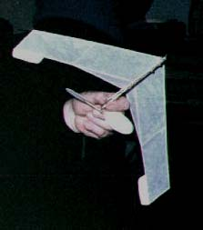

David Dodge, a.k.a. dannysoar, offers up this view of his A-6 Nurflugel, and writes...
"Sorry it's such a dismal photo. I keep telling myself I'll take some better ones.
It's a Gene Stubbs Parlor Wing adapted to the a6 rules. I found the plan in John Koptanak's News Letter to the Norwich FAC, "Wingovers and Wallbangers"
It is innocent of any sort of fin. I made it out of hobby store wood and rhino hide treated generic Japanese tissue. I remember it weighs about 2 grams. All these indoor wings seem to require a hi thrust line. I made my motor stick adjustable with tissue tubes. It flies on a 2x loop of .065" stripped from Tan II of unknown date. (It was a prize)
The best times so far..
1min 39sec community room of Teacher's Memorial in Norwich CT clean 18'3" ceiling
2min 1sec Glastonbury CT.Gym ugly 34' 11-1/2" ceiling
It flies left or right depending on the phase of the moon or whether the month is spelt with an even number of "a"s or something. Our competant staff of scientists in clean white coats is working on this night and day.
dannysoar"